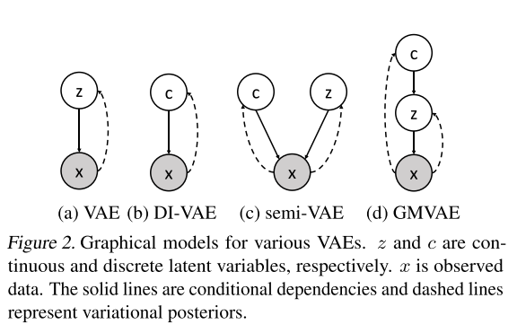

序言
DEM-VAE是字节跳动AI LAB团队于2020年发表的《Dispersed Exponential Family Mixture VAEs for Interpretable Text Generation》论文中提出的模型，论文收录在ICML中。论文名直译为“用于可解释文本生成的分散指数族混合 VAE ”。
题外话
最近实习面试结束了，回来更新博客了。“黄色的树林里分出两条路，可惜我不能同时去涉足”，最近有些感慨。看到这篇博客的人，希望这篇博客能对你有所帮助，也希望你天天开心。
简介
连续型VAE的隐变量难以解释分散属性，例如主题、对话动作等。这一点与VQ-VAE的动机相似。然而只使用分散隐变量的VAE的表达能力有限，隐变量\(c\)只包含\(log(\#c)\)位的信息，其中\(\#c\)为\(c\)可选值的数量。（这里的意思应该是信息论中的“信息量”，默认隐变量服从均匀分布，各值取得的概率相等，信息量\(-log(1/\#c)=log(\#c)\)。）
混合高斯分布的VAE（GM-VAE）提供了一种自然的想法，将分散隐变量与连续隐变量结合：每个高斯分布代表一个分散属性值，分量的值代表属性相同的句子。在理想情况下，不同高斯分布的均值与方差应该差别很大。然而GM-VAE容易出现模式崩溃问题，这使得不同高斯分布的均值与方差非常接近，GM-VAE退化为只有一个高斯分量的普通VAE。如下图所示：

在本文中，作者证明了模式崩溃问题不仅存在于GM-VAE中，而是具有指数族混合先验分布的VAE（EM-VAE）的普遍问题，由证据下界中的一个分散项引起。进而，作者提出了一个船新的DEM-VAE，在EM-VAE的目标函数里引入了额外一项分散项。按照论文的说法，DEM-VAE虽然适度减小了句子的似然（由于引入了新的损失项），但是在rPPL（reverse perplexity）与BLEU得到了更好的结果，并且能够有效地避免模式崩溃问题。
模式崩溃vs后验崩塌
普通的VAE会面临后验坍塌（KL散度消失）的问题，具体而言，KL损失项在训练之初迅速变为0。而本文要解决的是模式崩溃问题，是指先验分布中的多个模式崩溃为一个模式。模式崩溃会后验坍塌之间无必然联系。在后验坍塌未出现时，也可能出现模式崩溃。
虽然本文采用的解决方案与之前的解决后验坍塌的方案有些相似：找到目标函数中导致问题的那一项并削弱它的影响。但是本文采用的解决方案只引入了一个启发式的分散项，而不是整个KL损失项。
解决方法
混合指数族VAE
混合指数族VAE是指使用混合指数族分布作为先验分布的VAE（Exponential family - Wikipedia），最为常见的就是混合高斯分布的VAE，GM-VAE，它的先验分布为混合的高斯分布。GM-VAE使用一个分散变量\(c\)代表不同的高斯成分，连续隐变量\(z\)依赖于\(c\)。如下图所示：

其中，实现为依赖关系，虚线为变分后验。其中，\(p(c)\)可以近似为均匀分布，\(p_\eta(z|c)\)为指数族分布，例如高斯分布。
测试时：从先验分布\(p(c)\)中采样一个\(c\)，然后从\(c\)对应的高斯分布中采样隐变量\(p(z|c)\)，接着投喂到解码器\(p(x|z)\)中。
训练时：通过最大化边际似然\(\int\sum_cp_\eta(z,c)p_\theta(x|z)dz\)进行训练是不可行的。与VAE一样，使用近似后验分布\(q_\phi(z,c|x)=q_\phi(z|x)q_\phi(c|x)\)作为\(p(z,c|x)\)的估计，进一步改为优化如下所示的证据下界：

模式崩溃问题
作者通过研究ELBO目标函数，将导致模式崩溃的原因定位到\(\mathcal R_c\)与\(\mathcal R_z\)中。作者从指数族分布的参数化定义出发，将损失项\(\mathcal R_z,\mathcal R_c\)重写为KL平均正则项与分散项\(\mathcal L_d\)。 \[ \mathcal L_d=\mathbb E_{q_\phi(c|x)}A(\eta_c)-A(\mathbb E_{q_\phi(c|x)}\eta_c)>=0 \] 作者得出结论，最小化分散项\(\mathcal L_d\)使得先验分布的加权方差（即模式崩溃趋势）。这一部分的数学推导较为复杂，有兴趣的可以去看看原文。因此，作者提出在损失函数中加入一项正的分散项来抵消这一趋势，最终损失函数如下所示： \[ L(\theta;x)=ELBO+\beta \cdot \mathcal L_d \] 其中，\(\beta\)是一个超参数，通过调整\(\beta\)来达到平衡模式崩溃与正常训练。
DEM-VAE
在上述方法基础上，作者发现，使用额外的互信息项能够进一步优化可解释性，这一部分可以在实验结果中看到。互信息项在之前的工作中用于缓解KL散度消失的问题，定义如下： \[ \mathcal L_{mi}=\mathcal H(c)-\mathcal H(c|x)=\mathbb E_x\mathbb E_{q_\phi(c|x)}(logq_\phi(c|x)-logq_\phi(c)) \] 公式部分介绍完毕。在模型结构上，编码器为GRU等循环单元、解码器为一个语言模型。
实验
模式崩溃实验结果
可以看出，同时引入互信息项和分散项的VAE（DGM-VAE，DEM-VAE）的各个分量分布有着较为明显的分类边界，没有出现模式崩溃问题。
文本生成
作者使用四个指标：逆困惑度、BLEU、词级KL散度、负对数似然来评估文本生成的质量。其中，逆困惑度是指一个LSTM语言模型，从VAE的先验分布中采样的数据上进行训练，再在测试集上进行评估。实验结果如下：

可以看到，正如前文作者所说，由于引入了额外的分散项，使得NLL（负对数似然）相较基线模型更大，但是rPPL，BLEU等指标上取得了更好的结果。
总结
这篇论文也是离散VAE的一种尝试，在混合高斯分布的基础上，引入额外的分散项来解决模式崩溃问题。这使得模型的解释性更强。与之前介绍过得EQ-VAE相比，隐变量可以表征更多信息。感觉还是很有意义的工作，就是有点难懂。。。